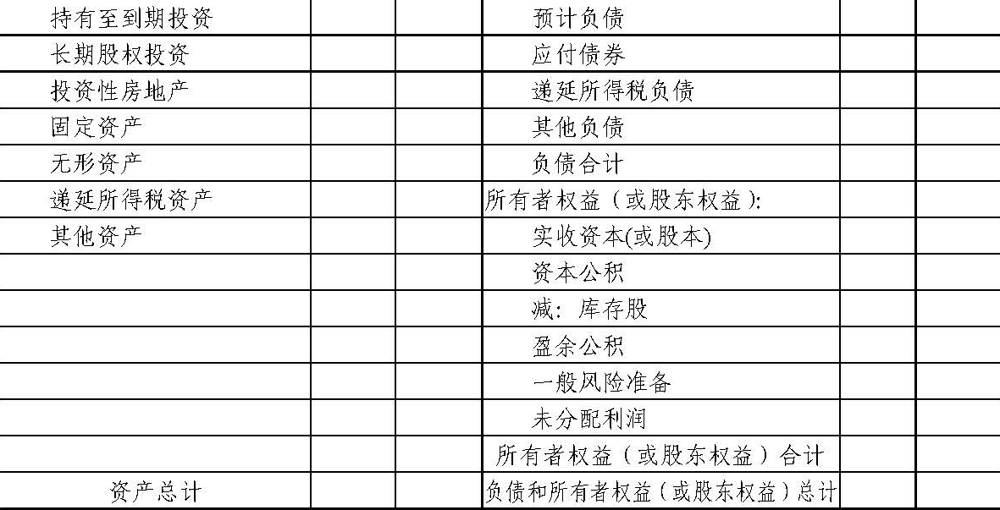

《企业会计准则第30号——财务报表列报》应用指南
【依据《关于印发〈企业会计准则——应用指南〉的通知》（财会〔2006〕18号）于2006.11.06发布，2007.01.01生效】
一、财务报表列报的基本要求
（一）列报基础
1.本准则规范企业持续经营基础下的财务报表列报。企业管理层应当评价企业的持续经营能力，对持续经营能力产生重大怀疑的，应当在附注中披露导致对持续经营能力产生重大怀疑的影响因素。
2.企业正式决定或被迫在当期或将在下一个会计期间进行清算或停止营业的，表明其处于非持续经营状态，应当采用其他基础编制财务报表，并在附注中声明财务报表未以持续经营为基础列报、披露未以持续经营为基础的原因和财务报表的编制基础。
（二）重要性的判断
判断项目性质的重要性，应当考虑该项目的性质是否属于企业日常活动等因素；判断项目金额大小的重要性，应当通过单项金额占资产总额、负债总额、所有者权益总额、营业收入总额、营业成本总额、净利润等直接相关项目金额的比重加以确定。
（三）正常营业周期
本准则判断流动资产、流动负债所指的一个正常营业周期，通常是指企业从购买用于加工的资产起至实现现金或现金等价物的期间。
正常营业周期通常短于一年，在一年内有几个营业周期。但是，也存在正常营业周期长于一年的情况，如房地产开发企业开发用于出售的房地产开发产品，造船企业制造用于出售的大型船只等，往往超过一年才变现、出售或耗用，仍应划分为流动资产。
正常营业周期不能确定的，应当以一年（12个月）作为正常营业周期。
（四）终止经营
终止经营，是指企业已被处置或被划归为持有待售的、在经营和编制财务报表时能够单独区分的组成部分，该组成部分按照企业计划将整体或部分进行处置。
同时满足下列条件的企业组成部分应当确认为持有待售：
（1）企业已经就处置该组成部分作出决议；
（2）企业已经与受让方签订了不可撤销的转让协议；
（3）该项转让将在一年内完成。
二、财务报表的组成和适用范围
财务报表至少应当包括资产负债表、利润表、现金流量表、所有者权益（或股东权益，下同）变动表和附注。本准则及应用指南适用于个别财务报表和合并财务报表，以及中期财务报表和年度财务报表。
现金流量表的编制和列报，还应遵循《企业会计准则第31号——现金流量表》及其应用指南；合并财务报表的编制和列报，还应遵循《企业会计准则第33号——合并财务报表》及其应用指南；中期财务报表的编制和列报，还应遵循《企业会计准则第32号——中期财务报告》。
财务报表格式和附注分别按一般企业、商业银行、保险公司、证券公司等企业类型予以规定。企业应当根据其经营活动的性质，确定本企业适用的财务报表格式和附注。
除不存在的项目外，企业应当按照具体准则及应用指南规定的报表格式进行列报。
政策性银行、信托投资公司、租赁公司、财务公司、典当公司应当执行商业银行财务报表格式和附注规定，如有特别需要，可以结合本企业的实际情况，进行必要调整和补充。
担保公司应当执行保险公司财务报表格式和附注规定，如有特别需要，可以结合本企业的实际情况，进行必要调整和补充。
资产管理公司、基金公司、期货公司应当执行证券公司财务报表格式和附注规定，如有特别需要，可以结合本企业的实际情况，进行必要调整和补充。
三、一般企业资产负债表、利润表和所有者权益变动表格式
资产负债表
| 编制单位： | ＿＿＿＿年＿＿月＿＿日 | 会企01表
单位：元 |
|
|
利润表
所有者权益变动表
四、一般企业报表附注
附注是财务报表的重要组成部分。企业应当按照规定披露附注信息，主要包括下列内容：
（一）企业的基本情况
1.企业注册地、组织形式和总部地址。
2.企业的业务性质和主要经营活动。
3.母公司以及集团最终母公司的名称。
4.财务报告的批准报出者和财务报告批准报出日。
（二）财务报表的编制基础
（三）遵循企业会计准则的声明
企业应当声明编制的财务报表符合企业会计准则的要求，真实、完整地反映了企业的财务状况、经营成果和现金流量等有关信息。
（四）重要会计政策和会计估计
企业应当披露采用的重要会计政策和会计估计，不重要的会计政策和会计估
计可以不披露。在披露重要会计政策和会计估计时，应当披露重要会计政策的确
定依据和财务报表项目的计量基础，以及会计估计中所采用的关键假设和不确定因素。
（五）会计政策和会计估计变更以及差错更正的说明
企业应当按照《企业会计准则第 28 号——会计政策、会计估计变更和差错更正》及其应用指南的规定，披露会计政策和会计估计变更以及差错更正的有关情况。
（六）报表重要项目的说明
企业对报表重要项目的说明，应当按照资产负债表、利润表、现金流量表、所有者权益变动表及其项目列示的顺序，采用文字和数字描述相结合的方式进行披露。报表重要项目的明细金额合计，应当与报表项目金额相衔接。
1.交易性金融资产的披露格式如下：
2.应收款项
（1）应收账款按账龄结构披露的格式如下：
|
|
| 注：有应收票据、预付账款、长期应收款、其他应收款的，比照应收账款进行披露。 |
（2）应收账款按客户类别披露的格式如下：
|
|
| 注：有应收票据、预付账款、长期应收款、其他应收款的，比照应收账款进行披露。 |
3.存货
（1）存货的披露格式如下：
（2）说明消耗性生物资产的期末实物数量，并按下列格式披露金额信息：
（3）存货跌价准备的披露格式如下：
4.其他流动资产的披露格式如下：
|
|
| 注：有长期待摊费用、其他非流动资产的，比照其他流动资产进行披露。 |
5.可供出售金融资产的披露格式如下：
6.持有至到期投资的披露格式如下：
7.长期股权投资
（1）长期股权投资的披露格式如下：
（2）被投资单位由于所在国家或地区及其他方面的影响，其向投资企业转移资金的能力受到限制的，应当披露受限制的具体情况。
（3）当期及累计未确认的投资损失金额。
8.投资性房地产
（1）企业采用成本模式进行后续计量的，应当披露下列信息：
（2）企业采用公允价值模式进行后续计量的，应当披露投资性房地产公允价值的确定依据及公允价值金额的增减变动情况。
（3）如有房地产转换的，应当说明房地产转换的原因及其影响。
9.固定资产
（1）固定资产的披露格式如下：
（2）企业确有准备处置固定资产的，应当说明准备处置的固定资产名称、账面价值、公允价值、预计处置费用和预计处置时间等。
10.生产性生物资产和公益性生物资产
（1）说明各类生物资产的期末实物数量，并按下列格式披露金额信息：
如有天然起源的生物资产，还应披露该资产的类别、取得方式和数量等。
（2）各类生产性生物资产的预计使用寿命、预计净残值、折旧方法、累计折旧和减值准备累计金额。
（3）与生物资产相关的风险情况与管理措施。
11.油气资产
（1）当期在国内和国外发生的取得矿区权益、油气勘探和油气开发各项支出的总额。
（2）油气资产的披露格式如下：
12.无形资产
（1）各类无形资产的披露格式如下：
（2）计入当期损益和确认为无形资产的研究开发支出金额。
13.商誉的形成来源、账面价值的增减变动情况。
14.递延所得税资产和递延所得税负债
（1）已确认递延所得税资产和递延所得税负债的披露格式如下：
（2）未确认递延所得税资产的可抵扣暂时性差异、可抵扣亏损等的金额（存在到期日的，还应披露到期日）。
15.资产减值准备的披露格式如下：
16.所有权受到限制的资产
（1）资产所有权受到限制的原因。
（2）所有权受到限制的资产金额披露格式如下：
17.交易性金融负债的披露格式如下：
18.职工薪酬
（1）应付职工薪酬的披露格式如下：
（2）企业本期为职工提供的各项非货币性福利形式、金额及其计算依据。
19.应交税费的披露格式如下：
20.其他流动负债的披露格式如下：
|
|
| 注：有预计负债、其他非流动负债的，比照其他流动负债进行披露。 |
21.短期借款和长期借款
（1）借款的披露格式如下：
（2）对于期末逾期借款，应分别贷款单位、借款金额、逾期时间、年利率、逾期未偿还原因和预期还款期等进行披露。
22.应付债券的披露格式如下：
23.长期应付款的披露格式如下：
24.营业收入
（1）营业收入的披露格式如下：
（2）披露建造合同当期预计损失的原因和金额，同时按下列格式披露：
25.公允价值变动收益的披露格式如下：
26.投资收益
（1）投资收益的披露格式如下：
（2）按照权益法核算的长期股权投资，直接以被投资单位的账面净损益计算确认投资损益的事实及原因。
27.资产减值损失的披露格式如下：
28.营业外收入的披露格式如下：
29.营业外支出的披露格式如下：
30.所得税费用
（1）所得税费用（收益）的组成，包括当期所得税、递延所得税。
（2）所得税费用（收益）与会计利润的关系。
31.企业应当披露取得政府补助的种类及金额。
32.每股收益
（1）基本每股收益和稀释每股收益分子、分母的计算过程。
（2）列报期间不具有稀释性但以后期间很可能具有稀释性的潜在普通股。
（3）在资产负债表日至财务报告批准报出日之间，企业发行在外普通股或潜在普通股股数发生重大变化的情况，如股份发行、股份回购、潜在普通股发行、潜在普通股转换或行权等。
33.企业可以按照费用的性质分类披露利润表。
34.非货币性资产交换
（1）换入资产、换出资产的类别。
（2）换入资产成本的确定方式。
（3）换入资产、换出资产的公允价值及换出资产的账面价值。
35.股份支付
（1）当期授予、行权和失效的各项权益工具总额。
（2）期末发行在外股份期权或其他权益工具行权价的范围和合同剩余期限。
（3）当期行权的股份期权或其他权益工具以其行权日价格计算的加权平均价格。
（4）股份支付交易对当期财务状况和经营成果的影响。
36.债务重组
按照《企业会计准则第12号——债务重组》第十四条或第十五条的相关规定进行披露。
37.借款费用
（1）当期资本化的借款费用金额。
（2）当期用于计算确定借款费用资本化金额的资本化率。
38.外币折算
（1）计入当期损益的汇兑差额。
（2）处置境外经营对外币财务报表折算差额的影响。
39.企业合并
企业合并发生当期的期末，合并方或购买方应当按照《企业会计准则第20号——企业合并》第十八条或第十九条的相关规定进行披露。
40.租赁
（1）融资租赁出租人应当说明未实现融资收益的余额，并披露与融资租赁有关的下列信息：
（2）经营租赁出租人各类租出资产的披露格式如下：
（3）融资租赁承租人应当说明未确认融资费用的余额，并披露与融资租赁有关的下列信息：
①各类租入固定资产的年初和期末原价、累计折旧额、减值准备累计金额。
②以后年度将支付的最低租赁付款额的披露格式如下：
（4）对于重大的经营租赁，经营租赁承租人应当披露下列信息：
（5）披露各售后租回交易以及售后租回合同中的重要条款。
41.终止经营的披露格式如下：
42.分部报告
（1）主要报告形式是业务分部的披露格式如下：
|
|
| 注：主要报告形式是地区分部的，比照业务分部格式进行披露。 |
（2）在主要报告形式的基础上，对于次要报告形式，企业还应披露对外交易收入、分部资产总额。
（七）或有事项
按照《企业会计准则第13号——或有事项》第十四条和第十五条的相关规定进行披露。
（八）资产负债表日后事项
1.每项重要的资产负债表日后非调整事项的性质、内容，及其对财务状况和经营成果的影响。无法做出估计的，应当说明原因。
2.资产负债表日后，企业利润分配方案中拟分配的以及经审议批准宣告发放的股利或利润。
（九）关联方关系及其交易
1.本企业的母公司有关信息披露格式如下：
母公司不是本企业最终控制方的，说明最终控制方名称。
母公司和最终控制方均不对外提供财务报表的，说明母公司之上与其最相近的对外提供财务报表的母公司名称。
2.母公司对本企业的持股比例和表决权比例。
3.本企业的子公司有关信息披露格式如下：
4.本企业的合营企业有关信息披露格式如下：
5.本企业与关联方发生交易的，分别说明各关联方关系的性质、交易类型及交易要素。交易要素至少应当包括：
（1）交易的金额。
（2）未结算项目的金额、条款和条件，以及有关提供或取得担保的信息。
（3）未结算应收项目的坏账准备金额。
（4）定价政策。
五、商业银行资产负债表、利润表和所有者权益变动表格式
资产负债表
| 编制单位： | ＿＿＿＿年＿＿月＿＿日 | 会商银01表
单位：元 |
|

|
利润表
所有者权益变动表
六、商业银行报表附注
商业银行应当按照规定披露附注信息，主要包括下列内容：
（一）商业银行的基本情况
（二）财务报表的编制基础
（三）遵循企业会计准则的声明
（四）重要会计政策和会计估计
（五）会计政策和会计估计变更以及差错更正的说明以上（一）至（五）项，应当比照一般企业进行披露。
（六）报表重要项目的说明
1.现金及存放中央银行款项的披露格式如下：
2.拆出资金的披露格式如下：
3.交易性金融资产（不含衍生金融资产）的披露格式如下：
如有指定为以公允价值计量且其变动计入当期损益的金融资产，也应比照上述格式进行披露。
4.衍生工具的披露格式如下：
5.买入返售金融资产的披露格式如下：
6.发放贷款和垫款
（1）贷款和垫款按个人和企业分布情况的披露格式如下：
（2）贷款和垫款按行业分布情况的披露格式如下：
（3）贷款和垫款按地区分布情况的披露格式如下：
（4）贷款和垫款按担保方式分布情况的披露格式如下：
（5）逾期贷款的披露格式如下：
|
|
| 注：即使是本金逾期1天，整笔贷款也应划为逾期贷款。 |
（6）贷款损失准备的披露格式如下：
|
|
注：①本期转出是指贷款转为抵债资产等而转出的贷款损失准备。
②本期核销是指经批准贷款予以核销而核销的贷款损失准备。 |
7.可供出售金融资产的披露格式如下：
8.持有至到期投资的披露格式如下：
9.其他资产的披露格式如下：
|
|
| 注：抵债资产的类别、减值准备计提、本年处置情况及未来处置计划， 应同时予以披露。 |
10.企业应当分别借入中央银行款项、国家外汇存款等披露期末账面余额和年初账面余额。
11.企业应当分别同业、其他金融机构存放款项披露期末账面余额和年初账面余额。
12.企业应当分别银行拆入、非银行金融机构拆入披露期末账面余额和年初账面余额。
13.交易性金融负债（不含衍生金融负债）的披露格式如下：
|
|
| 如有指定为以公允价值计量且其变动计入当期损益的金融负债，也应比照上述格式披露。 |
14.卖出回购金融资产款的披露格式如下：
15.吸收存款的披露格式如下：
16.应付债券的披露格式如下：
|
|
注：（1）发行次级债券的，应补充披露发行总面值、转换选择权条款、未摊销发行成本余额等。
（2）发行可转换公司债券的，应补充披露发行日可转换公司债券面值、债务成份和权益成份的初始确认金额、本期和上期支付的利息总额等。 |
17.其他负债的披露格式如下：
18.披露一般风险准备的期末、年初余额及计提比例。
19.利息净收入的披露格式如下：
20.手续费及佣金净收入的披露格式如下：
21.投资收益的披露格式如下：
22.公允价值变动收益的披露格式如下：
23.业务及管理费的披露格式如下：
24.分部报告
（1）主要报告形式是业务分部的披露格式如下：
|
|
| 注：主要报告形式是地区分部的，比照业务分部格式进行披露。 |
（2）在主要报告形式的基础上，对于次要报告形式，企业还应披露对外交易收入、分部资产总额。
25.担保物
按照《企业会计准则第37号——金融工具列报》第二十一条和第二十二条的相关规定进行披露。
26.金融资产转移（含资产证券化）
按照《企业会计准则第37号——金融工具列报》第二十条的相关规定进行披露。
27.除上述项目以外的其他项目，应当比照一般企业进行披露。
（七）或有事项除比照一般企业进行披露外，还应对承诺事项作如下披露：
1.信贷承诺的披露格式如下：
|
|
| 注：对信贷承诺应计算并披露本期和上期信贷风险加权金额。 |
2.存在经营租赁承诺、资本支出承诺、证券承销及债券承兑承诺的，还应披露有关情况。
（八）资产负债表日后事项比照一般企业进行披露。
（九）关联方关系及其交易比照一般企业进行披露。
（十）风险管理
按照《企业会计准则第37号——金融工具列报》第二十五条至第四十五条的相关规定进行披露。
七、保险公司资产负债表、利润表、所有者权益变动表格式
资产负债表
| 编制单位： | ＿＿＿＿年＿＿月＿＿日 | 会保01表
单位：元 |
|
|
利润表
保险公司所有者权益变动表，比照商业银行格式。
八、保险公司报表附注
保险公司应当按照规定披露附注信息，主要包括下列内容：
（一）保险公司的基本情况
（二）财务报表的编制基础
（三）遵循企业会计准则的声明
（四）重要会计政策和会计估计
（五）会计政策和会计估计变更以及差错更正的说明以上（一）至（五）项，应当比照一般企业进行披露。
（六）报表重要项目的说明
1.应收保费账龄结构的披露格式如下：
2.应收代位追偿款
（1）应收代位追偿款账龄结构的披露格式如下：
（2）金额重大代位追偿款产生的原因和未确认的理由。
3.定期存款的披露格式如下：
债券投资到期期限结构，比照上述格式披露。
4.其他资产的披露格式如下：
|
|
| 注：损余物资产生的原因、所处置损余物资的账面价值、实现的损益，应同时予以披露。 |
5.保户储金（或保户投资款）的披露格式如下：
6.保险合同准备金
（1）保险合同准备金增减变动情况的披露格式如下：
（2）保险合同准备金未到期期限的披露格式如下：
（3）原保险合同未决赔款准备金的披露格式如下：
7.其他负债的披露格式如下：
8.企业应当分别原保险合同和再保险合同披露提取未到期责任准备金的本期发生额和上期发生额。
9.赔付支出
（1）赔付支出按保险合同列示的披露格式如下：
（2）赔付支出按内容列示的披露格式如下：
10.提取保险责任准备金
（1）提取保险责任准备金按保险合同列示的披露格式如下：
（2）提取原保险合同未决赔款准备金按构成内容列示的披露格式如下：
11.摊回保险责任准备金的披露格式如下：
12.分部报告
（1）主要报告形式是业务分部的披露格式如下：
|
|
| 注：主要报告形式是地区分部的，比照业务分部格式进行披露。 |
（2）在主要报告形式的基础上，对于次要报告形式，企业还应披露对外交易收入、分部资产总额。
13.投资连结产品
（1）投资连结产品基本情况，包括名称、设立时间、账户特征、投资组合规定、投资风险等。
（2）独立账户单位数及每一独立账户单位净资产。
（3）独立账户的投资组合情况。
（4）风险保费、独立账户管理费计提情况。
（5）投资连结产品采用的主要会计政策。
（6）独立账户资产的估值原则。
14.除以上项目以外的其他项目，应当比照商业银行进行披露。
（七）或有事项比照商业银行进行披露。
（八）资产负债表日后事项比照商业银行进行披露。
（九）关联方关系及其交易比照商业银行进行披露。
（十）风险管理
1.保险风险
（1）风险管理目标和减轻风险的政策
①管理资产负债的技术，包括保持偿付能力的方法等。
②选择和接受可承保保险风险的政策，包括确定可接受风险的范围和水平等。
③评估和监控保险风险的方法，包括内部风险计量模型、敏感性分析等。
④限制和转移保险风险的方法，包括共同保险、再保险等。
（2）保险风险类型
①保险风险的内容。
②减轻保险风险的因素及程度，包括再保险等。
③可能引起现金流量发生变动的因素。
（3）保险风险集中度
①保险风险集中的险种。
②保险风险集中的地域。
（4）不考虑分出业务的索赔进展信息的披露格式如下：
扣除分出业务后的索赔进展信息，比照上述不考虑分出业务的索赔进展信息的格式进行披露。
（5）与保险合同有关的重大假设
①重大假设，包括死亡率、发病率、退保率、投资收益率等。
②对假设具有重大影响的数据的来源。
③假设变动的影响及敏感性分析。
④影响假设不确定性的事项和程度。
⑤不同假设之间的关系。
⑥描述过去经验和当前情况。
⑦假设与可观察到的市场价格或其他公开信息的符合程度。
2.除保险风险以外的其他风险，应当比照商业银行进行披露。
九、证券公司资产负债表、利润表、所有者权益变动表格式
资产负债表
| 编制单位： | ＿＿＿＿年＿＿月＿＿日 | 会证01表
单位：元 |
|
|
利润表
证券公司所有者权益变动表，比照商业银行格式。
十、证券公司报表附注
证券公司应当按照规定披露附注信息，主要包括下列内容：
（一）证券公司的基本情况
（二）财务报表的编制基础
（三）遵循企业会计准则的声明
（四）重要会计政策和会计估计
（五）会计政策和会计估计变更以及差错更正的说明以上（一）至（五）项，应当比照一般企业进行披露。
（六）报表重要项目的说明
1.货币资金的披露格式如下：
2.买入返售金融资产除比照商业银行进行披露外，还应按交易对手披露以下信息：
3.存出保证金的披露格式如下：
4.企业应当披露代理承销证券的方式（全额包销、余额包销、代销）、承销证券的种类等情况。
5.企业应当披露代理兑付债券的方式、种类、记名证券或无记名证券情况。
6.交易席位费的披露格式如下：
7.其他资产的披露格式如下：
8.卖出回购金融资产款除比照商业银行进行披露外，还应按交易对手披露以下信息：
9.代理买卖证券款的披露格式如下：
10.代理承销证券款的披露格式如下：
11.代理兑付证券款的披露格式如下：
12.其他负债的披露格式如下：
13.受托客户资产管理业务的披露格式如下：
14.手续费及佣金净收入的披露格式如下：
15.受托客户资产管理手续费及佣金收入的披露格式如下：
16.分部报告
（1）主要报告形式是业务分部的披露格式如下：
|
|
| 注：主要报告形式是地区分部的，比照业务分部格式进行披露。 |
（2）在主要报告形式的基础上，对于次要报告形式，企业还应披露对外交易收入、分部资产总额。
17.除以上项目以外的其他项目，应当比照商业银行进行披露。
（七）或有事项比照商业银行进行披露。
（八）资产负债表日后事项比照商业银行进行披露。
（九）关联方关系及其交易比照商业银行进行披露。
（十）风险管理
1.风险管理政策和组织架构
（1）风险管理政策，主要包括对各种风险的来源、正式风险治理组织和科学的监督流程及其定期复核制度，以及在严格职责分离、监督和控制基础上各相关业务部门、高级管理人员和风险管理职能部门之间的沟通和协作等。
（2）风险治理组织架构，主要包括各风险管理委员会和相关职能部门的设立和运转情况。
2.信用风险除比照商业银行披露必要的信用风险信息外，还应按行业、地区和交易对手的信用评级等分别披露信用风险信息。
3.流动风险除比照商业银行披露必要的流动风险信息外，还应披露进行流动性风险管理拟采取的主要措施。
4.市场风险比照商业银行披露市场风险信息。